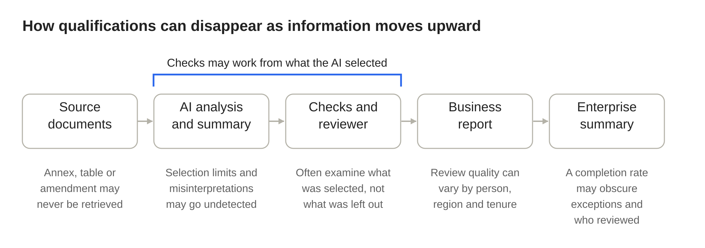

Consider a hypothetical AI-assisted review of a significant business contract. The system reads the supplied documents, identifies risks and produces a report with references to the relevant clauses. The reviewer sees that the citations resolve, the required checks have passed and an authorized professional has signed off. The assessment looks credible. Unfortunately, a material exception in an annex was not included in the AI’s analysis. The reviewer did not notice, and the recommendation is wrong.
It is possible that every recorded status is accurate. The citation check established that the references in the report could be located. The workflow check established that the required steps were completed. The approval record established who accepted the result. None necessarily established that all consequential evidence had been found or correctly interpreted.
Now imagine that this case becomes one of several thousand transactions summarized for management. The quarterly report accurately states that 99% of AI-assisted assessments completed their validation and approval steps. The missing exception, the limits of the checks and the competence required to detect it may be invisible in that number.
This is the problem I want to explore, and I see it as a chain of four connected risks. The first is what I call the assurance halo: the possibility that individually legitimate signs of governance lead people to infer more reliability than the evidence warrants. I offer the term as my own framing of a plausible risk, not as the discovery of a new psychological effect. The word “halo” echoes a long-established idea in psychology, and similar phrasing has appeared in other fields. The second risk is that ostensibly different controls may share a blind spot, because they work from the same limited evidence. The third is that human oversight may vary with deployment conditions and personnel. The fourth is that management aggregation may obscure the unresolved limitations behind a summary. None of these ideas is new on its own, and each is familiar to its own community. What I hope is useful is to see them as one chain, because weaknesses at different stages can reinforce one another, while the reports that reach executives become less informative about them. A CIO who understands the chain can do something about it.

The controls may be right. The conclusion may still be wrong.
Good governance is not the enemy here. Mature risk-management practices distinguish control compliance from substantive validation, and some include rigorous independent testing. The difficulty is preserving those distinctions when AI-supported work becomes routine. I find three questions useful. Process integrity asks what information was used, which checks ran and who approved the work. Evidential validity asks whether the sources were adequate, the important exceptions were found and the interpretations were sound. Workflow reliability asks how often the full human-AI process reaches a materially defensible conclusion under the conditions in which the business actually uses it. The same case can have strong evidence for the first question and much weaker evidence for the other two.
The matrix below shows where a few common controls stop. It illustrates coverage boundaries, not detection rates.
| Failure | Typical citation and format checks | What can detect it |
|---|---|---|
| An invented reference | Designed to address it | Independent source verification |
| A real source, interpreted wrongly | Not designed to address it | Examining the passage in context |
| A qualification separated from its clause | Not designed to address it | Examining the original document |
| An omitted annex or missing document | Not designed to address it | Independent examination of source coverage |
Specialized validation controls may detect additional failures if they are explicitly designed and tested to do so. An audit trail can reconstruct what entered the workflow and what happened to it. It cannot, by itself, establish what was missing from the evidence considered. These controls are valuable precisely because they help us investigate and correct a decision. They become problematic only when their meaning expands beyond what was tested.
Risks can compound because the checks share a blind spot
The most serious AI error is not always an invented fact. It can be something the system never mentions. Evidence passes through several stages before it becomes a business recommendation: a document must be acquired, converted into usable text, selected for analysis, interpreted and synthesized. A table can be misread, an annex excluded, a contradictory document overlooked or a qualification separated from the clause it changes. The final report may be fluent and properly cited, yet verifying every claim it contains cannot reveal a material claim that was never included. Coverage of what was examined is not the same as completeness of what needed to be examined.
That is not a call for every AI system to read every available page. Selective analysis is often a sensible trade-off among speed, cost and attention, and a preliminary brief has different obligations from a compliance determination or a material investment assessment. But the scope of examination, what remained unreviewed and the consequences of an omission must be explicit.
The compounding problem appears when later controls rely on the same incomplete picture. The AI misses the annex; a citation checker validates only the sources the AI used; the reviewer examines only the presented passages; and the approval workflow records a legitimate sign-off. Each of these controls may give genuine protection against other errors, but for this one they share a blind spot. Several checks operating on the same incomplete evidence do not necessarily provide independent opportunities to discover an omission. A genuinely independent examination of the original documents might catch it, and so might a specialist who knows where exceptions tend to appear. The point is not that controls never intercept errors, but that their failures can be correlated.
Human work is not immune. A conventional analyst can also miss the annex. What a CIO needs to establish is whether the proposed human-AI process changes the likelihood, severity and detectability of such errors compared with the process it replaces.
Human oversight depends on the conditions it operates in
Keeping a human in the loop is a sensible principle, but it is not proof that the human contribution makes the outcome more reliable. Research on automation bias, such as the work of Parasuraman and Manzey, has documented omission and commission errors when people rely on imperfect decision aids. Bansal and colleagues found in their experiments that explanations increased acceptance of AI recommendations whether the recommendations were correct or not. In a 2025 study of chatbot answers, Ding and colleagues found that citations raised participants’ self-reported trust even when the citations were random, and that trust fell when participants checked them; the study did not examine enterprise approval workflows. A 2024 meta-analysis of 106 experiments by Vaccaro and colleagues found that human-AI combinations on average did worse than the better of the human-only and AI-only alternatives, with losses in decision tasks. The combination gained when humans outperformed the AI alone and lost when the AI outperformed the humans, which suggests that what a human adds depends on how capable that human is relative to the machine. None of these studies tests the assurance- halo hypothesis, and their settings should not be treated as equivalent to today’s enterprise deployments. They do challenge the assumption that explanations, citations and an approval step automatically improve judgment.
A further difficulty becomes apparent after rollout: validation of human oversight under one set of human and operational conditions does not automatically transfer to another. An AI-assisted workflow may be designed and challenged by distinguished engineers, senior subject-matter experts or research fellows who understand which exceptions are consequential and can spend time probing difficult cases. Their scrutiny may justify confidence in the design under the conditions they tested. The workflow then reaches regional offices, other business units and changing teams, where reviewers may bring different subject knowledge, jurisdictional familiarity, workloads and access to specialist advice. Applied competence is also uneven among people who look equivalent on paper. Two employees with the same certification, a CISSP for instance, may differ in how well they recognize the exception that matters in a particular contract. None of this means that regional reviewers perform worse than headquarters specialists, and the specialists were not infallible. It means that competence, institutional knowledge, workload and the ability to escalate are dependencies of effective oversight, and a large organization cannot assume they are the same everywhere.
Staff turnover adds another dimension. In my experience, institutional knowledge about what is truly consequential does not always transfer smoothly to replacements, and rebuilding it can take months. In the meantime the system, its rules and its approval status can remain unchanged. That does not mean review quality inevitably declines when people leave. It means the effect of turnover on oversight is something to plan for and observe, because the technology can perform exactly as tested while the reliability of the full human-AI workflow changes with the people in it.
This is also where the halo hypothesis and operational reality meet. A reviewer who finds the underlying material difficult to assess may rely more heavily on apparently reassuring workflow signals. Whether that actually happens, and with which reviewers or tasks, needs testing rather than assumption. Approval must therefore mean more than the presence of an authorized name. Reviewers need access to original evidence, the freedom to challenge conclusions and the ability to introduce findings the AI never proposed, and where sufficient competence or evidence is unavailable, an honest escalation is a better control than a routine signature.
What gets lost on the way to the CIO
An individual assessment may carry important qualifications. It might state that some material was not examined, that a source version is uncertain or that the reviewer did not independently check a particular inference. A business-unit report may summarize that case as “validated and approved,” and an enterprise report may reduce it further to a completion rate. Each report can be accurate about the measure it reports, yet the organizational picture becomes progressively less informative about substantive reliability.
The same thing happens across the organization’s breadth and depth. A region with weak review, a team under staffing pressure or a business unit whose cases depend on documents the AI routinely misses can disappear into a global average, and each reporting level above tends to keep the headline measure and drop the qualification. Readers may recognize the familiar “watermelon” pattern of reports that stay green on the outside while problems persist within. I mention it only because it fits, not because the analogy is new. The distinction I care about is between a misleading metric and an accurate metric used to support an unwarranted conclusion. A 99% procedural completion rate is not misleading: it tells management something useful about process discipline. The error lies in treating it as evidence about the rate of consequential omissions, about whether particular regions are being reviewed by suitably experienced people, or about whether some decisions depend on source material the AI routinely fails to encounter.
This is not an argument against aggregation, since executives cannot read every case. It is an argument for knowing what the aggregate measures and what it conceals. A missing source, an overconfident interpretation, an unevenly resourced review and a reporting metric are not four unrelated problems. Later controls can inherit earlier omissions, and upward summarization can strip out the qualifications needed to understand them. Equally, these risks do not inevitably compound: an independently tested evidence- coverage check, a competent challenge or a well-designed escalation can interrupt the chain. The important question is whether the organization has shown that its safeguards work together where it matters.
What a CIO can do
The aim is not to turn every AI deployment into an expensive experiment. The depth of assurance should be proportionate to what could go wrong. Six actions follow, roughly in the order I would take them.
- Relabel what “passed” means. Require workflow-level status to state the checks performed and their limits. “Citations located; format valid; substantive completeness not independently assessed” is more useful than an unexplained green tick. This is inexpensive and can be done quickly. It may reduce one source of inappropriate confidence, though it cannot eliminate the risk.
- Map the independence of your controls. For each consequential workflow, list the failures that matter (an omitted annex, a misread clause, an inexperienced reviewer) and mark which controls could actually catch each one using the original evidence. Where every control works from the AI’s selection, you have found a shared blind spot, and the remedy is an independent look at the source material that does not start from the AI’s output. Define the source universe, versions and coverage obligation for the decision at the same time.
- Measure oversight quality instead of assuming it. Before relying on the workflow, run a controlled diagnostic pilot of 20 to 30 realistic cases, including difficult omissions. Use clearly identified test cases and the reviewers who currently operate the process, not only the specialists who designed it, and keep the test cases apart from real client decisions, formal records and downstream business actions. Compare end-to-end errors, reviewer detection, effort and cost with the existing process. To examine the halo itself, hold the underlying analysis and the truthful control information constant while varying how that information is presented. A pilot of this size is diagnostic: it cannot establish enterprise-wide reliability or a general behavioral effect. After launch, have an independent specialist re-examine a random sample of completed production assessments and report what was missed.
- Plan for changes in oversight effectiveness. Do not assume that review quality will fall when people leave, and do not assume it will hold. Tie approval authority to consequence and not only to certification, consider a second review or specialist support for consequential decisions while new reviewers build context, and build onboarding around known failure patterns and past misses so that institutional knowledge is transferred deliberately. Reassess after significant churn, regional expansion, changed requirements or model updates, and confirm that mandatory checks cannot be bypassed through integrations or APIs. Where competent review or evidence is unavailable, provide an honest escalation path in place of a routine signature.
- Make reporting preserve what matters. Distinguish procedural completion from tested decision quality. Report severe exceptions, unexamined evidence and unresolved issues alongside completion rates, and break results down by workflow, region, team and reviewer tenure so that a weak pocket cannot hide in a global average. Watch leading indicators as well: a region with no escalations may be missing exceptions, not free of them. Keep the ability to trace a concerning summary back to the cases behind it.
- Establish accountability for the joins. The weaknesses sit between functions: between evidence and interpretation, between AI and reviewer, between design and rollout, between a case and its summary. Ownership of those joins can become fragmented across technology, business operations, risk and internal audit, each of which holds a piece. The CIO is well placed to convene those functions and establish clear end- to-end accountability, without necessarily owning every control personally. This is a coordination challenge for executives, not a claim that existing governance structures are ineffective.
If I had to choose a sequence, I would start with the first and fifth because they are inexpensive and change what executives see, then apply the second and third to the single workflow where an undetected error would cost the most, and extend by consequence tier from there. These actions are consistent with the direction of NIST’s AI Risk Management Framework: evaluate systems under representative conditions, consider human capabilities and continue monitoring after deployment.
Accountability for the joins
I develop AI-assisted research and evidence-governance systems and have subjected their methods to adversarial review. That work has reinforced something I have encountered more broadly in enterprise technology: a control can be useful and correctly implemented without proving everything people later assume it proves. The harder problem is often found at the joins, between evidence and interpretation, between AI and reviewer, between tested design and operational rollout, and between an individual decision and its executive summary. That is where risks can reinforce one another and qualifications can disappear.
Governance remains essential. A decision whose evidence and history are preserved is easier to investigate and correct than one whose origins cannot be reconstructed. But an organization should not count every successful checkpoint as another independent guarantee, or confuse a high approval rate with evidence that its consequential decisions are sound.
Governance can make a decision accountable. Evidence and competent evaluation are still needed to make it defensible.
For a CIO, the question is not merely whether each stage passed its checks. Individually effective controls do not automatically make an effective end-to-end process, especially when their assumptions are shared, the operating workforce changes and unresolved qualifications are lost on the way up. The question is whether the checks address the failures that matter, whether they still work in the business as it operates today, and whether the risks left unresolved remain visible when the results reach the top.
Selected reading
- Parasuraman, R., & Manzey, D. H. (2010). Complacency and bias in human use of automation: An attentional integration. Human Factors, 52(3), 381–410. DOI: 10.1177/0018720810376055.
- Bansal, G., et al. (2021). Does the whole exceed its parts? The effect of AI explanations on complementary team performance. Proceedings of CHI 2021. DOI: 10.1145/3411764.3445717.
- Ding, Y., et al. (2025). Citations and trust in LLM generated responses. Proceedings of the AAAI Conference on Artificial Intelligence, 39(22). DOI: 10.1609/aaai.v39i22.34550.
- Vaccaro, M., Almaatouq, A., & Malone, T. (2024). When combinations of humans and AI are useful: A systematic review and meta-analysis. Nature Human Behaviour, 8(12), 2293–2303. DOI: 10.1038/s41562-024-02024-1.
- National Institute of Standards and Technology (2023). Artificial Intelligence Risk Management Framework (AI RMF 1.0), NIST AI 100-1.